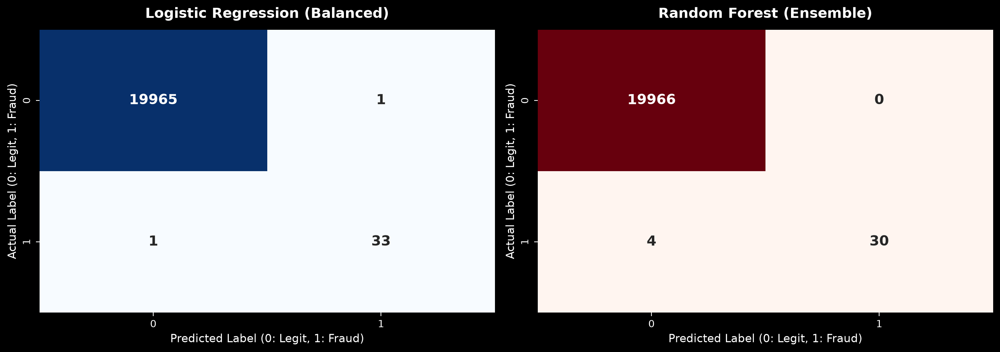
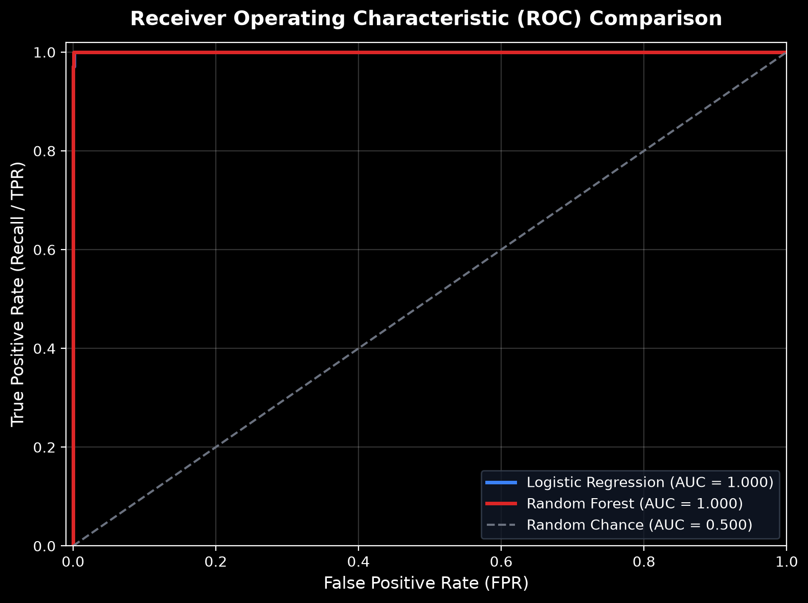
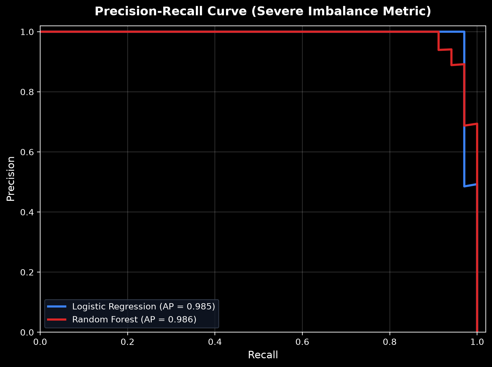
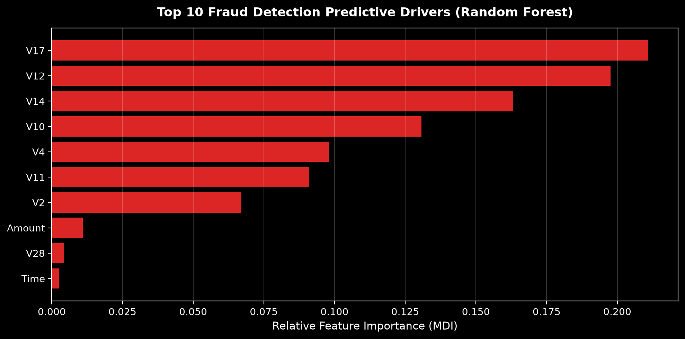

Page 3 of 3
Results & Findings
Evaluation on 20,000 held-out synthetic transactions, including 34 generated fraud examples. recall (catching fraudsters) and precision (avoiding false alarms).
Model Comparison
Head-to-Head: LR vs Random Forest
All metrics are measured on a stratified 20% synthetic test split (20,000 transactions, 34 fraud cases). Highlighted values indicate the stronger model for each metric.
| Metric | Logistic Regression | Random Forest | Winner |
|---|---|---|---|
| Accuracy | 99.99% | 99.98% | LR |
| Precision | 97.06% | 100.00% | RF |
| Recall (Sensitivity) | 97.06% | 88.24% | LR |
| F1 Score | 97.06% | 93.75% | LR |
| AUC-ROC | 0.9999 | 1.0000 | RF |
| Average Precision (PR-AUC) | 0.9851 | 0.9861 | RF |
| False Alarm Rate (FP) | 1 (0.005%) | 0 (0.000%) | RF |
Random Forest Classifier (Ensemble)
Logistic Regression (Balanced)
Confusion Matrices
Breaking Down the Predictions
For fraud detection, False Negatives (missed fraud) are the most costly error. Random Forest achieves lower FN than Logistic Regression.
Predicted →
Predicted →

ROC Curves
AUC-ROC Analysis
The ROC curve shows the trade-off between True Positive Rate (sensitivity) and False Positive Rate at various classification thresholds. Higher AUC = better model.


PR-AUC demonstrates true discriminatory capability at low False Positive tolerance.
Feature Importance
Top Predictors
Random Forest feature importance scores — which PCA components most strongly discriminate fraudulent from legitimate transactions.

Findings
Key Takeaways
Access The Project
All Materials Available on GitHub
The complete source code, dataset, Jupyter notebooks, documentation, and this portfolio website are all accessible through the GitHub repository.
github.com/jabulani-mayenda/fruad-detection